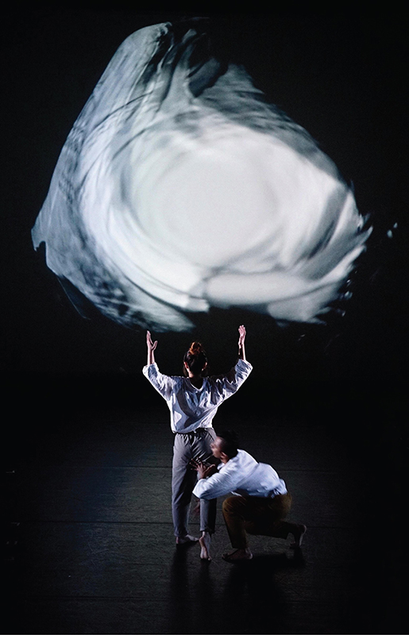
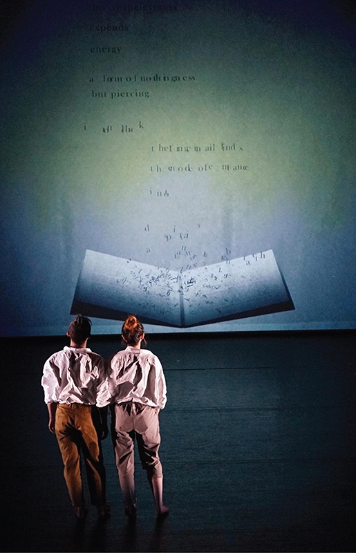
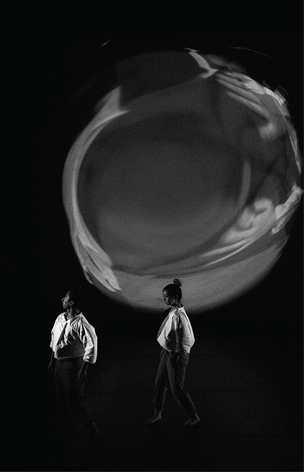
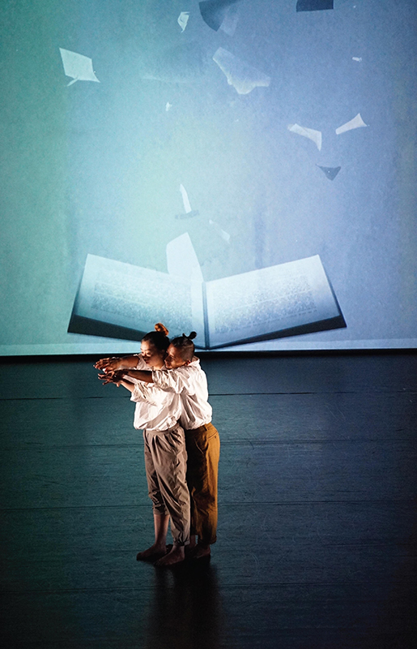

|
Strikethrough (2020) |
|
LEARN MORE Create a Strikethrough Poem (website) Strikethrough: A Score By Maxine Flasher-Düzgünes (article) On Creating Strikethrough: the Process Behind Erasure Poetry in Choreographic Scores (essay) FEATURES 2021 Museum of Wild and Newfangled Art Opening Show 2020 Tisch Dance & Technology Works and Installations CREDITS Project by Maxine Zeliha Flasher-Düzgünes Choreography & Direction: Maxine Zeliha Flasher-Düzgünes Visuals: Jade Lien Dancers: Israel Harris, Hiroka Nagai Sound: Alex MacKinnon, "Drone Work #1" Lighting Design: Hamilton Guillén |
|   |
|   |